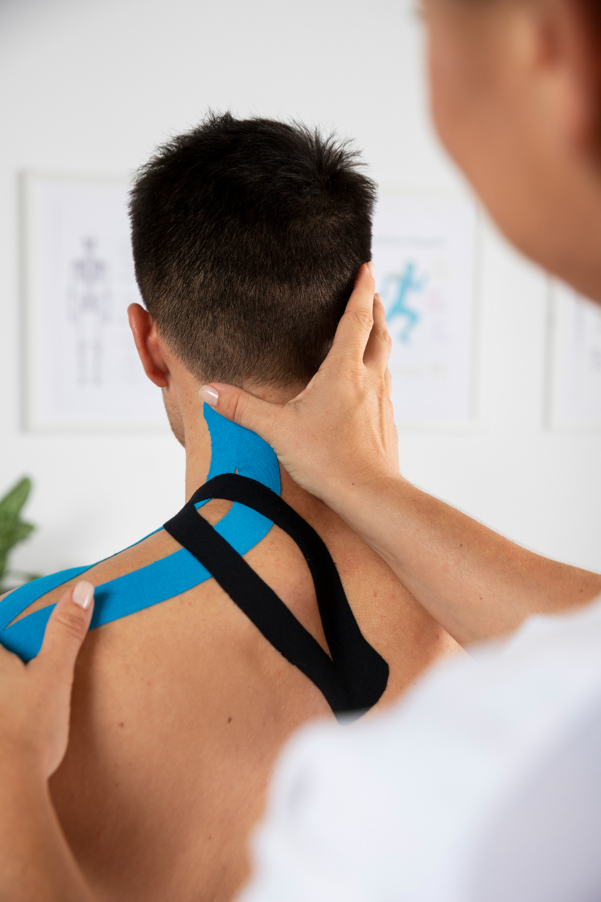
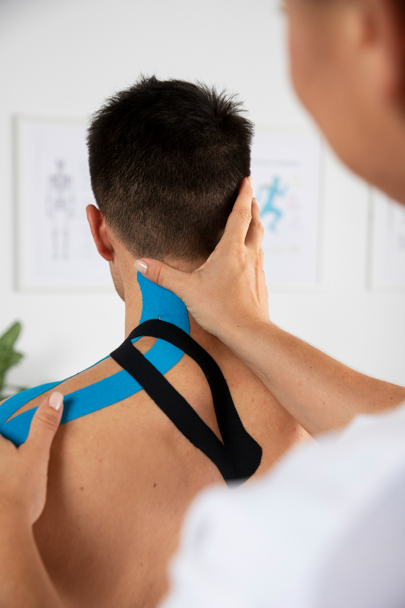

Acerca de mi
Recupérate con Cristian Morales, Kinesiólogo Apasionado
Mi enfoque
¡Bienvenidos a mi espacio dedicado al bienestar y la salud! Soy Cristian Morales, un apasionado kinesiólogo de 29 años con dos años de experiencia en el campo. Mi misión es brindar atención integral a mis pacientes, enfocándome en sus necesidades individuales para lograr una recuperación óptima.
Clientes felices
La kinesiología va más allá de un trabajo para mí; es mi vocación y compromiso diario. Mi enfoque se basa en la paciencia, la lealtad y la confianza, creando un ambiente donde mis pacientes se sientan seguros y apoyados en su proceso de recuperación. La eficiencia y la puntualidad son pilares fundamentales en mi práctica, porque entiendo la importancia de su tiempo y su bienestar.
A lo largo de estos dos años de experiencia, he tenido el privilegio de trabajar con personas increíbles y ver cómo logran superar sus desafíos físicos. Cada cliente es único, y me enorgullece adaptar mis técnicas y enfoques para satisfacer sus necesidades específicas.
Mi conexión con los clientes
Lo que más valoro es la conexión que establezco con mis clientes. Su gratitud y aprecio son la mayor recompensa para mí, impulsándome a seguir mejorando y perfeccionando mis habilidades. Mi dedicación se refleja en cada sesión, donde me esfuerzo por proporcionar un servicio excepcional que marque la diferencia en la calidad de vida de quienes confían en mi cuidado.
Agradezco la confianza de todos aquellos que han formado parte de mi trayectoria hasta ahora. Estoy emocionado de seguir creciendo y aprendiendo, comprometido a brindar servicios de kinesiología que no solo aborden las necesidades físicas, sino que también promuevan el bienestar holístico.
¡Gracias por visitar mi espacio en línea! Estoy aquí para apoyarte en tu viaje hacia una vida más saludable y plena.